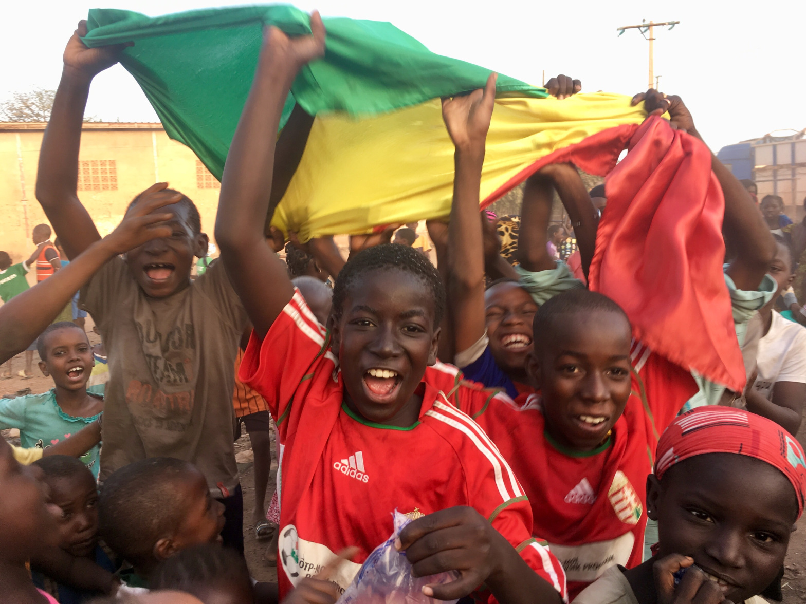
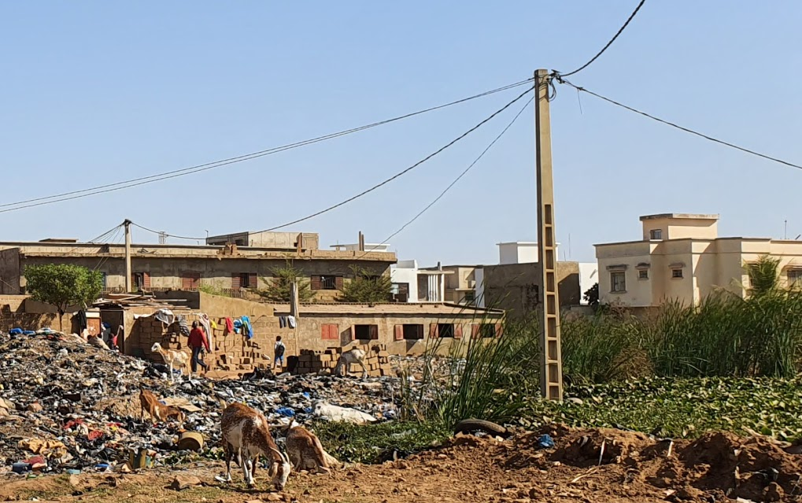

Utat a labdának!
Építsünk sportpályát és emeljük ki az iskolát a mocsárból!
ügynökség segitségével
Van egy nyomornegyed Afrikában, ahol jól ismerik a magyarokat! 🙂
Iskola a mocsáron
Ez nem más, mint Bamakóban a Sanfil nyomornegyed. Itt bizony lengedeznek a magyar zászlók, ha egy hazánkfia arravetődik, és nem véletlen az sem, hogy a helyi iskola tantermeinek csupasz falait vagy az Igazgyöngy Alapítvány gyermekrajzai vagy krétával rajzolt Magyarország térképe díszíti.

Ez az iskola immár hat éve magyar családok segítségével fejlődik. Építettünk már osztálytermeket, mosdókat, ültettünk fákat, tanítottunk, sportoltunk, rajzoltunk együtt az afrikai gyerekekkel. A Budapest-Bamakó rally is többször járt ott például iskolapadokat leszállítva.
A Bamakói gyermektámogatás!
Ezen a környéken nincs állami iskola. Itt csak az jár iskolába, aki ki tudja fizetni a szerény tandíjat, vagy a hat éve innen indult Bamakói gyermektámogatási program támogatottja. Több, mint száz gyermek jár jelenleg is ide magyar családok segítségével.

Előkészítő osztály
Kell egy grund!
Az iskola a nyomornegyed szélén közvetlenül a szeméttel teli mocsárra épült. Megközelíteni leginkább a szemétdombon keresztül, néha csak pallókon egyensúlyozva lehet. Tavaly az iskola belekezdett a környezet javításába a mocsár feltöltésével, de kifogyott a pénzből. Elképzelésük szerint a szemetes, bűzös pocsolya feltöltésével nem csak egészségesebb, maláriamentesebb környezet alakulna ki, hanem egy sportályának használható “grund”-ot is nyernének a gyerekek.
Ennek különösen az iskola sikeres focicsapata örülne, akik a környék beépülésével már nem találnak helyet az edzéseikre

A foci csapat magyar mezekben

Kilátás az iskola ablakból
Itt folytatná az iskola grundépítést, amelyhez még 50 dömpernyi homokra és törmelékre lenne szüksége.
Segítsünk nekik sportpályát építeni! Teremtsünk egészségesebb környezetet!
Támogass, hogy segíthessünk!
Rendezzük meg az idei a hagyományos Magyarország-Mali focimeccset az iskolai sportpályán! : )
Bármilyen kis összeggel támogathatsz, de ha:
- 10 000.- Ft felett támogatsz, felírjuk neved a főbb támogatók közé az iskolában, ha pedig
- 50 000.- Ft felett támogatsz, ültetünk egy fát a neveddel az iskola köré.
Szívesen vesszük azt is, ha munkahelyi, baráti vagy családi csoportok együtt támogatják a sportpálya programunkat. Szervezz támogatói csapatot te is! Legyél a program nagykövete!
Köszönjük!
A Közel Afrikához Alapítvány és a Chérifoula Iskola
Köszönjük a Hungary helps alapitánynak
Ezt a projektünket a HungaryHelps Ügynökség 900 000.- Ft-tal támogatja.